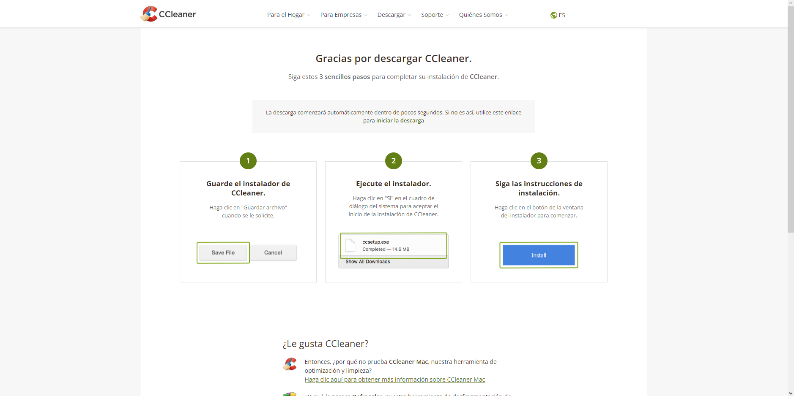
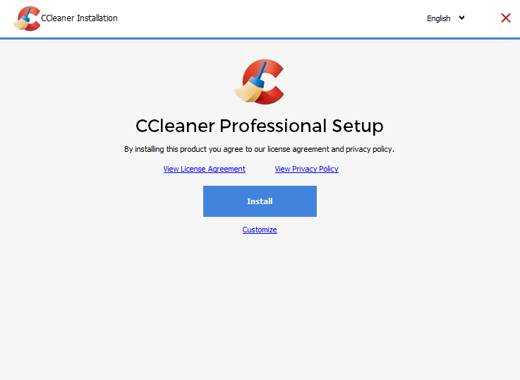
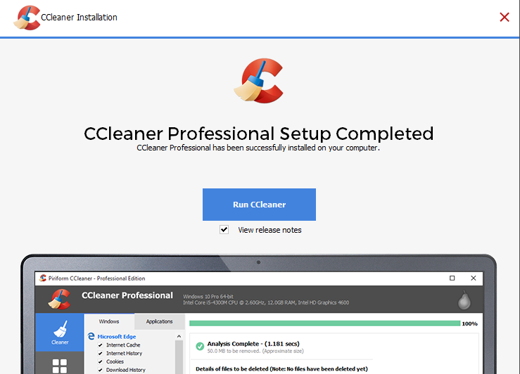

CCleaner es una herramienta de software utilizada para limpiar archivos potencialmente no deseados y entradas invalidas del registro de Windows de un computador. Es una de las aplicaciones de limpieza más antiguas existentes, siendo lanzada originalmente en 2003.
Para instalar CCleaner nos dirigiremos a la página oficial de CClean
Primero nos descargaremos el .exe para instalar el programa:
Una vez ejecutado le daremos a "Customize" y seleccionaremos las opciones que deseemos
Una vez terminada la instalacion ya podremos usar CClean
